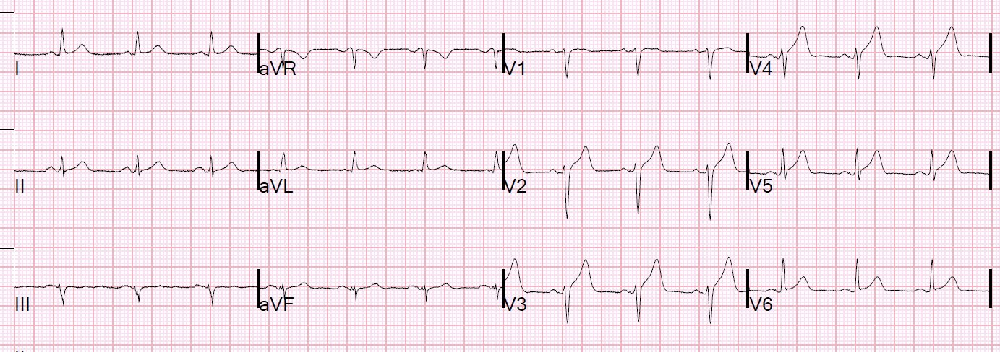
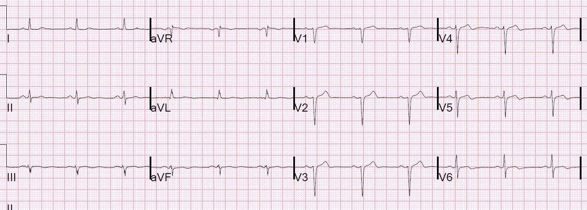
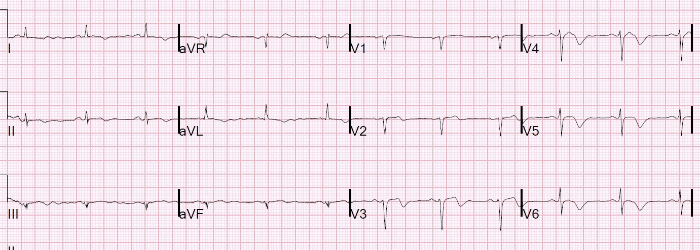
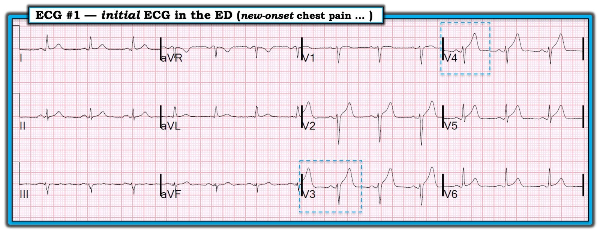

11/05/2019 — Nam giới 50 mấy tuổi đau ngực cấp
Bản dịch tiếng Việt của bài "A 50-something male with acute chest pain" – Dr. Smith’s ECG Blog. Giữ nguyên toàn bộ 6 hình ảnh của bản gốc.
Một nam giới 50 tuổi đang ngồi dự một hội nghị công việc thì bắt đầu đau ngực sau xương ức kèm vã mồ hôi. Ông có tiền sử tăng huyết áp, nhưng không có tiền sử bệnh tim. Cơn đau ở mức 7/10 khi ghi điện tâm đồ này:


Bạn nghĩ gì?
Kết quả đọc bằng máy tính: NHỊP XOANG; ST CHÊNH LÊN THÀNH TRƯỚC BÊN KHÔNG CÓ GIÁ TRỊ CHẨN ĐOÁN; ĐIỆN TÂM ĐỒ GIÁP RANH (BORDERLINE)
Bác sĩ tim mạch đọc lại (overread) đã xác nhận kết quả đọc bằng máy tính (không chẩn đoán OMI hay STEMI).
Với tôi, đây rõ ràng là một nhồi máu cơ tim do tắc (Occlusion MI, OMI). Nhưng nhiều người không nhận ra những điện tâm đồ như thế này!
Điện tâm đồ trong bài trước còn rõ ràng hơn nhiều, nhưng vẫn không được nhận ra:
What happens when you don’t recognize an OMI? (Điều gì xảy ra khi bạn không nhận ra một OMI?)
Theo ước lượng bằng mắt của tôi, STE tại điểm J so với điểm nối PQ ở V2 = 1.5, V3 = 2.0, V4 = 1.5. Vì ngưỡng “STEMI” là 2.0 ở V2 và V3 đối với nam giới trên 40 tuổi, và ngưỡng ở V4 là 1.0 mm, nên thực ra điện tâm đồ này có đạt tiêu chuẩn STEMI. (Dĩ nhiên không phải mọi điện tâm đồ đạt tiêu chuẩn STEMI đều là STEMI; có rất nhiều trường hợp dương tính giả, nhưng chúng KHÔNG trông giống điện tâm đồ này.)
Thông thường, thuật toán của máy tính đo ST chênh lên tại điểm J khá chính xác, nên tôi tin theo máy ở điểm này. Nhưng việc đo như vậy đơn giản là không quan trọng!
Khi có ST chênh lên ở các chuyển đạo này, và mọi thứ khác đều bình thường (QRS bình thường, ST lõm hướng lên, không có ST chênh xuống hay sóng T đảo ngược, không có sóng Q), thì chẩn đoán phân biệt là ST chênh lên biến thể bình thường với tắc LAD.
ST chênh lên biến thể bình thường luôn có tăng tiến sóng R tốt.
Đó là lý do công thức 4 biến chính xác đến vậy trong chẩn đoán tắc LAD khi không chẩn đoán được STEMI.
Nếu ta tính công thức trong ca này, giá trị là 20.75, cao hơn nhiều so với điểm cắt 18.2, xác nhận đây là tắc LAD chứ KHÔNG phải ST chênh lên bình thường.
Sóng T tối cấp: có người sẽ nói rằng chính những sóng T lớn này làm cho điện tâm đồ có giá trị chẩn đoán tắc LAD. Điều này KHÔNG đúng. Tuy nhiên, có thể nói một cách chính xác rằng tỷ số T/R mới là yếu tố cho phép chẩn đoán. Trong nghiên cứu rất lớn của chúng tôi so sánh biến thể bình thường với tắc LAD, kích thước sóng T là như nhau ở cả hai nhóm, nhưng tỷ số biên độ sóng T trên biên độ sóng R ở V2-V4 lớn hơn nhiều, do sóng R nhỏ ở nhóm nhồi máu và sóng R lớn ở nhóm Bình thường. Tôi thường nói: “Khi sóng T vượt cao hơn hẳn sóng R, hãy cảnh giác!”
Trong nghiên cứu của chúng tôi, biên độ sóng R nhỏ là biến đơn lẻ dự báo tốt nhất, vượt xa các biến khác, để phân biệt nhồi máu với bình thường!! AUC của riêng biến này là 0.86. Vì vậy công thức dùng biên độ sóng R ở V4 (RAV4). Các biến có ý nghĩa khác là ST chênh lên tại thời điểm ms sau điểm J ở chuyển đạo V3 (STE60V3) [người dịch: nguyên văn thiếu con số trước “ms”, nhiều khả năng là 60 ms theo tên biến STE60V3], QTc, và tổng biên độ QRS ở V2 (QRSV2)
12 Example Cases of Use of 3- and 4-variable formulas to differentiate normal STE from subtle LAD occlusion (12 ca minh họa cách dùng công thức 3 biến và 4 biến để phân biệt ST chênh lên bình thường với tắc LAD kín đáo)
Ca bệnh tiếp diễn
Phòng thông tim (cath lab) được kích hoạt ngay lập tức.
Khi chụp mạch vành, với thời gian từ cửa đến bóng (door-to-balloon) nhanh:
Thủ phạm là tắc 100% LAD đoạn giữa.
Đây là điện tâm đồ sau đặt stent:


Lưu ý sự khởi đầu của sóng Wellens (sóng T tái tưới máu) ở V3-V6. Ngay cả V2 cũng có sườn xuống dốc đứng của sóng T, gợi ý sóng Wellens sớm ở đó.
Đây là điện tâm đồ sáng hôm sau:


Troponin I đỉnh là 28.1 ng/mL
Siêu âm tim ngày hôm sau cho thấy:
Kích thước buồng thất trái bình thường.
Phì đại thất trái đồng tâm .
Rối loạn vận động thành khu trú — thành trước và mỏm, giảm động.
Phân suất tống máu thất trái ước tính là 46 %. Ước lượng bằng mắt là 50-55%.
Những điểm cần học:
1. ST chênh lên tối thiểu kèm sóng T lớn chỉ là biến thể bình thường khi có biên độ sóng R lớn và tăng tiến sóng R tốt.
2. Hãy dùng công thức trước khi cho rằng ST chênh lên là bình thường
3. Hãy cẩn trọng khi xếp lại điều mà bạn nghĩ là tắc LAD thành biến thể bình thường. Công thức vẫn có âm tính giả, và chẩn đoán thiếu tắc LAD tệ hơn nhiều so với chẩn đoán quá mức!
4. Hãy học cách nhận ra tắc LAD kín đáo!!
Hãy đọc bài này:
12 Example Cases of Use of 3- and 4-variable formulas to differentiate normal STE from subtle LAD occlusion (12 ca minh họa cách dùng công thức 3 biến và 4 biến để phân biệt ST chênh lên bình thường với tắc LAD kín đáo)
Tốt hơn nữa: hãy xem bài giảng video dài 1 giờ này: One hour lecture on Subtle ECG Findings of Coronary Occlusion (Bài giảng một giờ về các dấu hiệu điện tâm đồ kín đáo của tắc động mạch vành)
CẬP NHẬT: “Subtle Findings of LAD Occlusion“ (Các dấu hiệu kín đáo của tắc LAD). Bài này được ghi hình tại bài giảng Controversies and Consensus mà tôi trình bày ở Northampton, MA vào tháng Chín năm 2017. Bài này không được sản xuất chuyên nghiệp bằng bài “One Hour lecture on Subtle ECG Findings of LAD Occlusion” ở trên, nhưng cập nhật hơn.

===================================
Bình luận của KEN GRAUER, MD (11/5/2019):
===================================
Điện tâm đồ này cung cấp thêm một ví dụ nữa về OMI cấp mà quá dễ dàng bị bỏ sót — và trong ca này, đã không được bác sĩ tim mạch đọc lại điện tâm đồ ban đầu của bệnh nhân nhận ra.
- Để cho rõ — tôi đã đăng lại điện tâm đồ ban đầu ghi tại khoa cấp cứu (ED) của bệnh nhân này ở Hình 1.
- Dr. Smith đã trình bày chi tiết cách dùng công thức 4 biến của ông cho ca này — trong đó giá trị tính được = 20.75 chắc chắn là dương tính (cao hơn hẳn điểm cắt = 18.2). Tôi thích biết điểm số theo công thức của Dr. Smith — vì khi nó dương tính rõ rệt như vậy (như trong ca này) — điều này mang lại sự ủng hộ tức thì cho nghi ngờ OMI cấp của bạn.
- Tôi đã đánh giá điện tâm đồ ban đầu này trước khi biết điểm số theo công thức. Nhằm đưa ra một cách tiếp cận khác — những suy nghĩ tuần tự của tôi khi đánh giá ca này được trình bày chi tiết dưới đây.
- BÌNH LUẬN: Trong một thế giới lý tưởng — máy tính sẽ tự động tính giá trị công thức 4 biến của Dr. Smith — và đưa giá trị này vào như một phần của kết quả đọc bằng máy tính. Việc biết ngay lập tức điểm số công thức trong lúc bác sĩ lâm sàng đang xem điện tâm đồ sẽ giúp tối ưu hóa việc ra quyết định — vì biết điểm số công thức cao rõ ràng sẽ cảnh báo người đọc về nhu cầu phải soi xét đặc biệt cẩn thận!


=================
Những Suy nghĩ tuần tự của tôi khi Đánh giá Ca bệnh này:
- Bệnh sử được cung cấp thực sự đáng lo ngại = đau ngực dữ dội mới khởi phát ở một nam giới 50 tuổi. Việc biết rằng cơn đau ngực dữ dội vẫn đang tiếp diễn vào lúc ghi điện tâm đồ ban đầu ở Hình 1 thực sự hữu ích — vì điều này tối đa hóa khả năng thấy được bất thường trên điện tâm đồ nếu có OMI cấp.
- BÌNH LUẬN — Khi tôi biết điện tâm đồ mình đang đọc được ghi ở một bệnh nhân đau ngực mới khởi phát có tính chất gợi ý nguồn gốc tim — mức độ soi xét của tôi được nâng lên. Ngưỡng để tôi nghi ngờ các thay đổi sóng ST-T có thể là cấp tính lập tức được hạ thấp — và “tư duy” của tôi được chuyển đổi sang chỗ cần phải tự thuyết phục mình rằng mọi bất thường kín đáo mà tôi có thể thấy là không cấp tính, chứ không phải theo chiều ngược lại. Tôi ngờ rằng sự “chuyển đổi tư duy” này đã không xảy ra ở bác sĩ tim mạch đọc lại bản ghi này là “không có giá trị chẩn đoán”.
Về Hình 1: Sau khi ghi nhận nhịp xoang — các khoảng bình thường — trục hơi lệch trái (chưa đủ để xếp là LAHB) — và không có lớn buồng tim — tôi tập trung chú ý vào Thay đổi Q–R–S–T:
- Sóng Q — Có một sóng Q cực kỳ nhỏ ở chuyển đạo aVL. Rõ ràng sóng này không có ý nghĩa. Mặc dù không có sóng Q thực sự ở các chuyển đạo thành dưới — phức bộ QRS bị phân mảnh ở chuyển đạo III và aVF. Điều này chưa rõ ý nghĩa.
- Tăng tiến sóng R — Vùng chuyển tiếp bị chậm ở Hình 1. Nghĩa là, sóng R chỉ cao hơn độ sâu của sóng S khi tới khoảng giữa chuyển đạo V4 và V5 (Bình thường vùng chuyển tiếp không được muộn hơn khoảng giữa V3 và V4). Cần lưu ý — sóng r ban đầu có hiện diện ở cả 4 chuyển đạo ngực đầu tiên — nhưng sóng r này không cao dần lên như bình thường. Như Dr. Smith đã nêu — đánh giá tăng tiến sóng R thực sự cực kỳ quan trọng khi cân nhắc khả năng OMI thành trước cấp. BÌNH LUẬN — Trừ khi bạn dùng một Cách tiếp cận hệ thống để đọc điện tâm đồ — thì quá dễ quên đánh giá tăng tiến sóng R …
- Thay đổi sóng ST-T — Sóng ST-T dẹt ở chuyển đạo III, và sóng T dẹt hơn mong đợi ở chuyển đạo aVF. Đây là những dấu hiệu không đặc hiệu. Khi tôi nhìn vào các chuyển đạo ngực — sự chú ý của tôi ngay lập tức bị thu hút vào chuyển đạo V3 (nằm trong hình chữ nhật chấm XANH DƯƠNG ở chuyển đạo này). “Hình ảnh trực quan” của sóng T ở chuyển đạo V3 phải được nhận ra ngay lập tức là cao không tương xứng so với biên độ QRS ở chuyển đạo này (Ta có thể đo chiều cao sóng T ở V3 = 8mm; và so sánh với chiều cao sóng r + s ở chuyển đạo này = 9mm — nhưng chính sự không tương xứng giữa QRS và sóng ST-T trong hình ảnh trực quan mới là điều chúng ta phải ngay tức khắc nhận ra!). Ở một bệnh nhân đau ngực mới khởi phát đáng lo ngại — KHÔNG thể nào sóng T ở chuyển đạo V3 là bình thường.
- Mặc dù sóng T ở chuyển đạo V4 lân cận không hẳn cao bằng sóng T ở V3 — trong bối cảnh sự không tương xứng mà ta vừa thấy ở chuyển đạo V3 — cũng KHÔNG thể nào sóng T ở chuyển đạo V4 là bình thường.
- Các chuyển đạo lân cận — Ban đầu tôi không ấn tượng với sóng ST-T ở chuyển đạo V2. Rõ ràng có một ít ST chênh lên ở V2 — nhưng ST lõm hướng lên, và mức ST chênh lên ở chuyển đạo V2 nếu xét riêng thì không nhất thiết là quá mức. NHƯNG — trong bối cảnh một bệnh nhân đau ngực mới khởi phát đáng lo ngại và các sóng ST-T mà ta vừa bình luận ở chuyển đạo V3 và V4 — thì sóng ST-T ở chuyển đạo V2 nhiều khả năng cũng bất thường. Tương tự, sóng T ở chuyển đạo V5 trong bối cảnh những gì ta thấy ở các chuyển đạo lân cận V3,V4 buộc phải được diễn giải là một phần của cùng quá trình! (Tôi ngờ rằng ST chênh lên kín đáo ở chuyển đạo V1 và V6 cũng là một phần của quá trình này — dù điều này có thể còn bàn cãi, và không hề ảnh hưởng tới diễn giải tổng thể của chúng ta).
ĐIỀU CỐT LÕI: Ngay cả trước khi biết điểm số theo công thức của Dr. Smith — ở một bệnh nhân đau ngực dữ dội mới khởi phát, điện tâm đồ ở Hình 1 buộc phải được diễn giải là OMI cấp cho đến khi chứng minh được điều ngược lại.
- LƯU Ý: Tôi đã cố ý trình bày chi tiết quá trình suy nghĩ từng bước ở trên theo kiểu quay chậm. Trong “thời gian thực” — tôi đi đến kết luận OMI cấp cần thông tim kịp thời trong chưa đầy 5 giây. Tốc độ (và độ chính xác cao hơn trong nhận diện hình ảnh) đến từ thực hành.